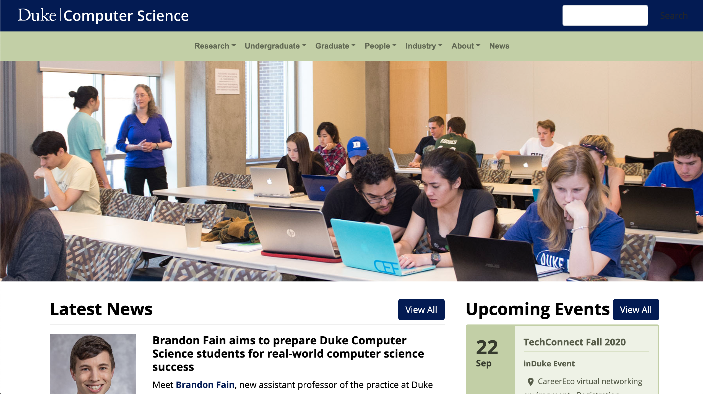

Type: Remote Internship
Timeframe: July - September 2020
Skills: Web Design, Teamwork
Tools: Adobe XD
Redesigning the Duke University Computer Science Department's website by creating prototypes of the main landing pages with a focus on user experience that is being implemented to their website.
Working on a team of 2 interns, 1 faculty project lead, and 2 computer science IT staff, I was responsible for the design and research aspect of our project. Throughout this internship, I...
To begin, my team reviewed Duke's current website at the time. We also looked at multiple CS Department's website from other universities to brainstorm design ideas.
We though about the most common information people view the CS department's website:
Undergraduate information
Graduate Program information
Research opportunities and information
Major or Minor requirements
Latest News and Upcoming Events
Contact information
for people
Prospective Student information
Industry Partners information
Here's the initial Duke CS Department's website. It gets the job done, but it can be tricky to find information and isn't very visually appealing.
Unsurprisingly, we found that visitors often struggle navigating through the website. The lack of engaging content created difficulties when finding the links for the most important information.
When my team began thinking about what pages had the most traffic on, we decided the homepage and the undergraduate, graduate, and research landing page were the ones we would focus on.
Homepage:
Landing Pages:
With all the restrictions we already had before starting the designs, I began creating an idea of the color pallete, the website aesthetic, and what the homepage would look like.
By using a grid-based layout, we started off with a simple design
including all required sections: Events, Latest News, Research, and Contact.
From the first design to the second, we rearranged the pride points at
the top of the page, changed the background colors of the sections,
expanded the latest news section to be a gallery. The most difficult
section was the Contact because I had a hard time figuring out how to
organize the different social platforms.
Continuing the changes in design, we had incorporated more colors to
create an inviting aesthetic. We also got rid of the Featured Video section
and replaced it with an Our People because the Contact section would display
the youtube videos.
In addition, I edited the footer section by adding the social media icons
to the footer so all pages of the website would allow you to reach the
different social media platforms and also simplified the quick links
under each section of the footer.
We finally were finished with our homepage and ready to tackle
the three main landing pages!
We created a consistent aesthetic that we made sure to incorporate in the other landing pages. By using the same fonts, color pallete, and grid-based layout, we designed the Undergraduate, Graduate, and Research landing pages.
Once we finished our designs, we were able to reach out to Professor Jun Yang, the CS Department Chair, to recieve feedback with our designs for the department's website. He suggested we include pride points on the landing pages for Undergraduate, Graduate and the Research section as well.
Based on Professor Yang's Feedback, I made these changes to the website design using a similar design on the homepage of overlaying the pictures with text and badges.
Homepage
Undergraduate Landing Page
Graduate Landing Page
Research Landing Page
Think about our audience! When developing our designs we continuously asked ourselves How will the typical audience interact with our design?. With this in mind, I was able to focus on the user experience while incorporating the information needed.
Teamwork makes the [UX] dream work! Because the internship was remote, we as a team understood the challenges that come with working from home. We scheduled meetings according to everyone's availability first and foremost.
One of the difficulties when developing an academic institution's website is the requirement to adhere to specific guidelines. The team had to actively think about the image of Duke Trinity College of Arts & Science and make sure we do not design a website that would not be representative of the typical Trinity website.
After completing this internship, I believe I have gained a valuable understanding of important design principles. The importance of simplicity, easy navigation, grid-based layouts, and consistency are some of the things I kept in mind when trying to create an aesthetic, user-friendly website design.